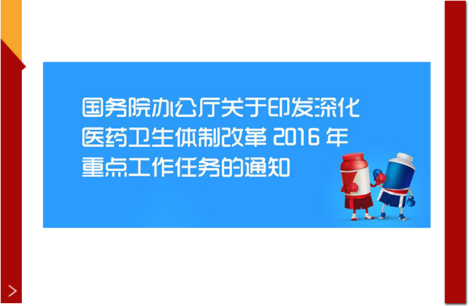
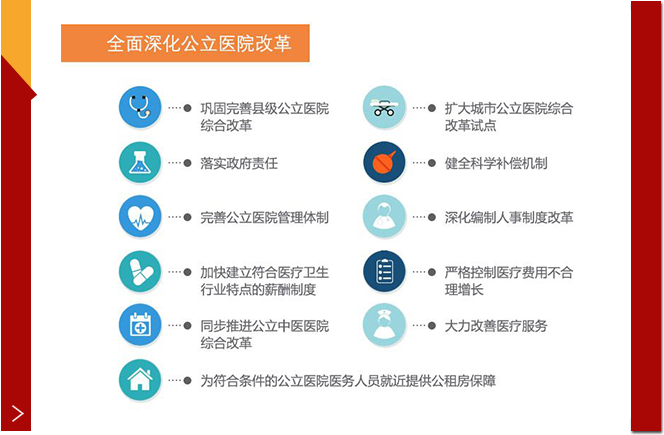
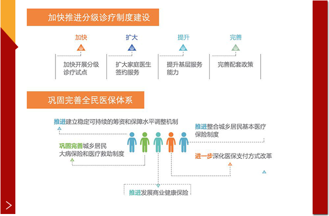
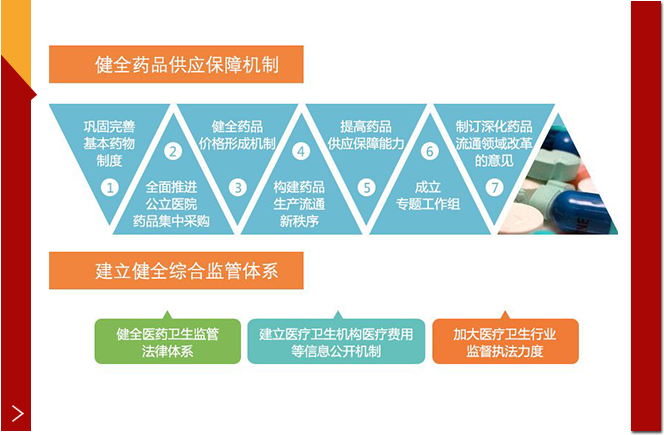
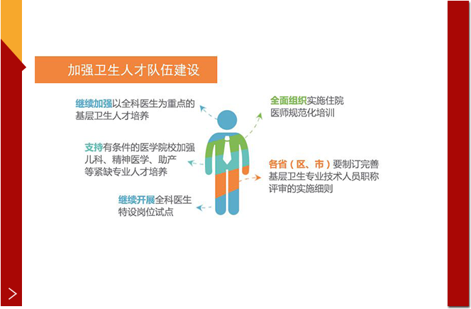
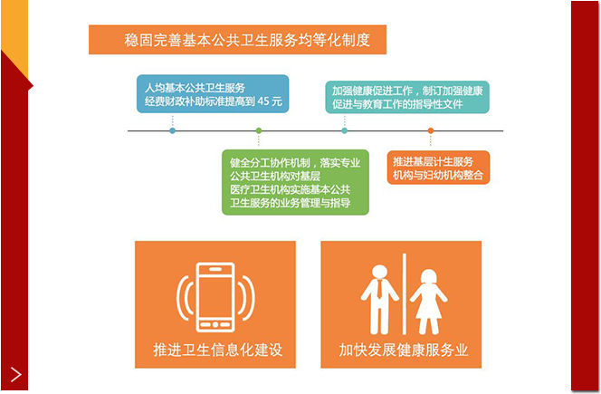

十八大新闻中心在梅地亚中心二楼多功能厅举办第四场记者招待会，国家发展和改革委员会副主任、党组副书记朱之鑫朱之鑫表示，医药卫生体制改革关系到每个社会成员的切身利益，也是一个世界性的难题。2009年4月份，中国政府启动了新一轮的医改，在党中央国务院的坚强领导下，经过全社会的共同努力，如期完成了五项重点改革任务，取得了明显的成效。在这段时间里，我们建成了世界上覆盖人口最多的医疗保障网，使中国13亿多人的病有所医的问题有了基本的保障。同时，还建立了一个崭新的基层的服务平台，让人民群众得到了很大的实惠。
新闻 播报
湛江医改九百天
2009年1月，湛江市新农合与城镇居民医疗保险并轨运行，解决了以往因两种医保制度缴费标准悬殊、统筹层次不同所造成的参保积极性不高、基金调剂能力弱等问题。为了进一步改善“并轨”后医保报销手续烦琐、医疗资源配置不均、政府管理成本居高不下等状况，湛江市决定引入商业手段，为城乡居民基本医疗保险和补充医疗保险提供一体化管理和服务——通过建立“一体化咨询服务平台”，保险公司向全市居民提供包括基本医疗、补充医疗、健康管理、商业健康保险等政策咨询服务；通过建立“一体化支付结算平台”，实现病人诊疗费用结算信息在保险公司、社保部门和定点医院之间的共享。
虽然商保融入社保体系还有很长的路要走，但“湛江模式”走出了具有示范效应的第一步。这种“统一政策、统一核算、统一管理”的商保社保合作新模式，对完善社会基本医疗保险制度具有重要的借鉴意义。
全面深化改革进行时医改“手术刀”该动向哪里
温州市民卡将卫计委、医保局、财政局三个部门的服务，完全统一在一个平台上，这是温州市民卡与众不同的医改特色。有了这张市民卡，病人不仅不用带病例，还可以自己在网上挂号。所有的检查和化验结果都被这张卡片信息化管理了，就连付费，也都是一张卡就能解决。温州市民卡最有价值的一点在于他的手术刀动向了医疗运行体系本身，各个部门的利益障碍被打通了，信息共享平台建立起来了，价格才能变得透明，问题才能充分暴露。小小的市民卡就不仅仅是便民服务的叠加，它的背后是一整套改革的底层设计。
看病就医难、医疗价格、医保支付改革将协调推进
在推进社会体制改革方面，李克强表示：“深化养老保险制度改革，建立企业职工基本养老保险基金中央调剂制度。深化公立医院综合改革，协调推进医疗价格、人事薪酬、药品流通、医保支付改革，提高医疗卫生服务质量，下大力气解决群众看病就医难题。深入推进教育、文化、体育等改革，充分释放社会领域巨大发展潜力。” 由于利益分割上的均衡博弈，目前推行异地就医即时报销有时仍会遇阻。对此，李克强的要求是，将继续实施健康中国战略。其中便提及“扩大跨省异地就医直接结算范围，把基层医院和外出农民工、外来就业创业人员等全部纳入”，同时提高基本医保和大病保险保障水平，居民基本医保人均财政补助标准再增加40元，一半用于大病保险。
李克强表示，未来将加强全科医生队伍建设，推进分级诊疗。继续提高基本公共卫生服务经费人均财政补助标准。改善妇幼保健服务。支持中医药事业传承发展。创新食品药品监管方式，注重用互联网、大数据等提升监管效能，加快实现全程留痕、信息可追溯，让问题产品无处藏身、不法制售者难逃法网
巩固改革成果 继续攻坚克难 谋划好医改规划
2011年6月23日，来自海内外的30多位专家走进中南海，参加国务院医改专家咨询委员会第一次全体会议。中共中央政治局常委、国务院副总理、国务院深化医改领导小组组长李克强与专家座谈并讲话。
他强调，当前医改进展势头良好，要巩固改革成果，继续攻坚克难，突出重点难点问题研究，谋划好“十二五”医改规划，把医改不断推向深入。深化医改，既是解决群众看病难、看病贵问题的现实需要，也事关中华民族的整体健康素质和长远发展。医改启动两年来，按照保基本、强基层、建机制的路径，经过各方面的共同努力，五项重点改革取得积极成效。
但在我们这个拥有13亿人口的大国，随着城乡居民健康需求不断增长，医改仍面临诸多困难和挑战，体制机制性矛盾亟待破解。必须坚持科学民主决策，引智聚力，开拓创新，不断探索这个世界性难题中国式的解决办法。
医改在攻坚中铿锵前行
“医改已经进入了一个攻坚克难的关键时期”，国家发展和改革委员会副主任朱之鑫在十八大第四场中外记者招待会上说，为了进一步深化医改，国务院发布的“十二五”医改规划主要聚焦在三个方面：一是健全全民的医保体系，二是巩固和完善基本药物的制度和基层运行的新机制，三是积极推进公立医院的改革。
——全民医保体系向多层次、多维度、多体系扩展。
2012年8月，发改委、原卫生部等6部门出台《关于开展城乡居民大病保险工作的指导意见》，采取用城镇居民保险和新农合基金购买商业医疗保险的方式，建立城乡居民大病保险制度。
——保基本、强基层、建机制，基层医改面临的新问题逐个破解。
在政府办基层医疗卫生机构全部实施基本药物制度基础上，山西、江苏、安徽、陕西等6省份已实现了基本药物在村卫生室全覆盖，北京、天津、海南、四川、青海在半数以上的非政府办基层医疗卫生机构实施基本药物制度。
——公立医院改革“破冰”前行。
2012年6月，国务院办公厅印发了《关于县级公立医院综合改革试点的意见》。目前，国家确定的311个试点县基本取消了15％的药品加成，陕西、安徽、浙江、青海在全省推开。全国范围内，已有700多个县取消了药品加成。
图解医改攻坚政策
-
1
重
点
工
作
任
务
通
知
> -
2
全
面
深
化
公
立
医
院
改
革
> -
3
推
进
制
度
建
设
巩
固
完
善
医
保
> -
4
健
全
药
品
供
应
与
综
合
监
管
> -
5
加
强
卫
生
人
才
队
伍
建
设
> -
6
稳
固
完
善
基
本
公
共
卫
生
服
务
>